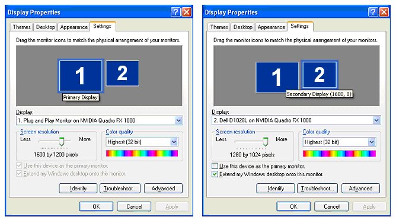
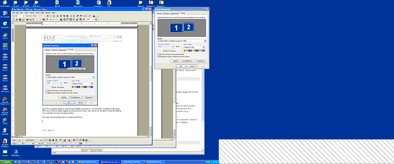
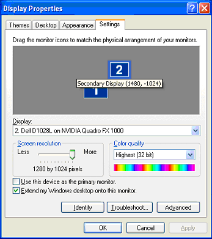
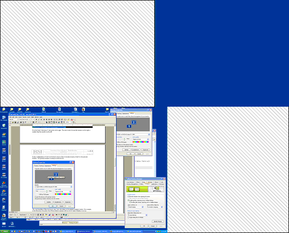

IDL allows you to position windows on multiple monitors attached to the same computer. Such multi-monitor configurations may appear to the user (and to you as an IDL programmer) as a single extended desktop consisting of multiple physical monitors, or as a series of individual desktops appearing on multiple physical monitors.
IDL’s support for multi-monitor configurations includes the following:
It is important to note that support for multi-monitor configurations is quite different on Windows and UNIX systems, and that as a result IDL’s support varies by platform. By understanding how multi-monitor configurations are supported on each platform, you can create cross-platform IDL applications that will take advantage of multiple monitors when they are present. See the following sections for platform-specific details.
See Example: Multi-Monitor Window Positioning for example code that uses the IDL’s multi-monitor support.
In this discussion of IDL’s multi-monitor support, the following terms are used with the meanings listed below.
An onscreen user work area. Multiple desktops are generally managed either by the operating system itself or by a desktop management system and are dependant on the physical monitor configuration — that is, you can have multiple desktops on a single monitor.
On UNIX systems, the word Display describes the connection between an X client and an X server. Do not confuse this with monitor .
A term for an onscreen user work area that may span multiple monitors. It is often used to describe the minimum bounding box that encloses the user work area defined by each monitor in the system. There may be “holes” in an extended desktop if two monitors with different display resolutions are used. Extended desktops are characterized by their ability to drag windows between monitors on the desktop.
A physical display device such as a CRT or LCD.
In an extended desktop system, the primary monitor is the monitor that contains the origin (0,0). If the desktop is not extended, then the primary monitor is the one that is considered “default” by the graphics system.
On UNIX systems, the word Screen describes one of a display’s drawing surfaces. A single X server can control more than one Screen , but is generally operated or controlled by a single user with a single keyboard and pointing device.
In an extended desktop system, a secondary monitor is any monitor that is not the primary monitor. If the desktop is not extended, then a secondary monitor is the one that is not considered “default” by the graphics system.
A desktop configured so that it is larger than the monitor used to display it. The user can “pan” the desktop around to cause the desired parts of it to be visible on the monitor.
A program that runs on the machine to which the graphics adapter is attached. It owns the graphics adapter and is responsible for drawing on it.
A program that connects to an X server, sending commands to the X server to draw on the display device. The X client is typically the application and may or may not be executing on the same machine as the X server.
The “core” method for an X server to handle more than one monitor. Each monitor is assigned a Screen ; the user can move the pointing device from one monitor to another, but cannot drag windows between monitors. Each Screen is addressed by the final digit in the X Display name (e.g., the 1 in ajax:0.1 ).
An X11 extension that allows a single X11 screen to be displayed across multiple monitors. This allows an application to open windows on any monitor using the same Display / Screen connection. This is an example of an extended desktop implementation for UNIX systems and is essentially a way to emulate the extended desktop that Windows presents to the user.
A multi-monitor configuration on a Windows system is always presented as an extended desktop, with the work area spanning the configured monitors. You can drag windows from one monitor to the other, or they can span monitors.
The extended desktop configuration works best when using a single graphics adapter with two video outputs. If you use multiple graphics adaptors, features such as 3D hardware video acceleration may only be available on one monitor.
To configure a multi-monitor configuration using the Windows Display applet; either:
Figure shows the Display Properties control panel for a common dual-monitor configuration. The left-hand image shows the primary display selected and identified as monitor 1. The right-hand image shows the secondary display selected and identified as monitor 2. The coordinates of the upper-left corner of the secondary display are shown in the tool-tip (“Secondary Display (1600, 0)”). Also, the Extend my Windows desktop onto this monitor checkbox is selected to extend the desktop onto the secondary monitor.
|
 |
The extended desktop configured in Figure appears as in Figure , with a dotted line showing where the two monitors meet in one desktop.
|
 |
In this example, there are no windows on the secondary monitor. The crosshatched area in the lower right exists because the monitor on the right has fewer pixel rows than the monitor on the left.
The Display Properties dialog allows you to change the location of the secondary monitor relative to the primary monitor. Note that pixel (0,0) is defined as being the upper left corner of the primary monitor. Figure shows a configuration in which the secondary monitor is positioned “above” the primary monitor; the tooltip shows that the upper left corner of the secondary monitor is positioned 1480 pixels to the right of and -1024 pixels below pixel (0,0). Figure shows the shape of the resulting extended desktop area.
|
 |
|
 |
There is now more “empty” space (represented by the crosshatched area). The handling of empty space depends on the graphics adapter vendor. For example, many desktop managers let you control whether or not an application can create a window in this empty space. (Remember that if you do create a window in empty space, there would be no way to drag the window back onto a visible portion of the desktop.) Many desktop managers also contain controls for opening windows and repositioning dialog boxes.
Note: Third-party desktop managers may enforce their own positioning rules, overriding requests from other applications such as IDL. If you have trouble positioning windows on the screen using IDL, investigate whether your desktop manager’s control over other applications can be changed or relaxed.
Because the UNIX platform encompasses multiple vendors, multi-monitor support can be more complex to configure. There are two primary multi-monitor solutions for UNIX platforms:
Note: Configure your UNIX multi-monitor systems using XINERAMA wherever possible. This gives you the most functionality and increases commonality with Windows.
An X server running on a computer using multiple monitors can be configured so that a different Screen is assigned to each monitor. This is the traditional way for a UNIX system to support multiple monitors, and it is the only option available on IDL platforms for which there is no XINERAMA support.
In a multi-screen configuration, windows and dialogs cannot be dragged between windows interactively, and cannot span multiple monitors. Each monitor has a different display name and coordinate system with its own origin.
The XINERAMA extension creates an extended desktop similar to that presented on Windows systems. Windows and dialogs can be dragged between windows interactively, and can span multiple monitors. All configured monitors share the same display name and have a common origin.
Stable XINERAMA support is only available on selected X Windows System releases. As of the IDL 6.3 release, IDL provides client support on Macintosh OS X and several Linux distributions. In addition, If the X server is running Macintosh OS X, Linux, or Solaris 10, IDL can treat multiple monitors as an extended desktop even though no information about individual monitor geometries is available.
UNIX systems that provide XINERAMA support are rarely configured to do so by default; consult your operating system documentation for configuration information. Some vendors supply configuration tools and desktop management controls to help use their systems. In addition, some X window managers are “XINERAMA-aware” and let you configure some multi-monitor-related behaviors.
Note: Third-party desktop managers may enforce their own positioning rules, overriding requests from other applications such as IDL. If you have trouble positioning windows on the screen using IDL, investigate whether your desktop manager’s control over other applications can be changed or relaxed.
When using networked UNIX systems, you are generally seated at an X workstation that is running an X server and some local programs such as command shells. You then log in remotely to another machine and execute X client programs (like IDL) with their DISPLAY environment variable pointing back to the X server you are using. The client program may be running on a machine that is of completely different architecture and capability than the machine running the X server. Table shows the IDL X client’s interactions with X servers on systems that do or do not support XINERAMA.
|
Client supports
|
Server supports XINERAMA? |
|
|
Yes |
No |
|
|
Yes —
|
IDL detects extended desktop with monitor information for each physical monitor. |
IDL detects independent desktops with monitor information for each physical monitor. |
|
No —
|
IDL detects extended desktop with monitor information for single desktop spanning all monitors. Individual monitor information is not available. |
IDL detects independent desktops with monitor information for each physical monitor |
The IDL distribution contains example .pro code that illustrates how to use the IDLsysMonitorInfo object to position application windows on multiple monitors. With a little care, you can design the code to work on Windows, XINERAMA, and X Multi-Screen platforms and handle all monitor configurations.
The example code displays a simple splash screen in the middle of the primary monitor and opens a simple application GUI on the n th monitor in a system with n monitors.
The application window positioning for multi-monitor example is included in the file multimon_ex1.pro in the examples/doc/utilities subdirectory of the IDL distribution.
Note: Run this example procedure by entering multimon_ex1 at the IDL command prompt or view the file in an IDL Editor window by entering .EDIT multimon_ex1.pro .